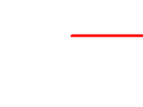
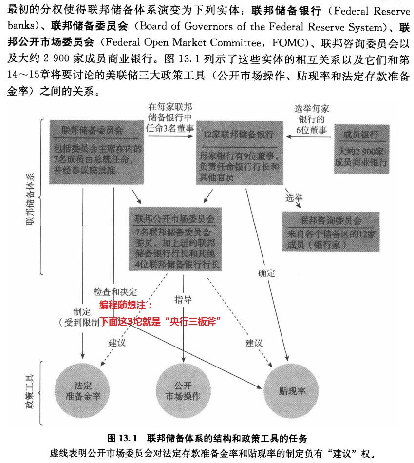
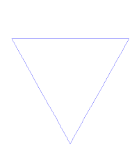

某些读者可能抱怨最近2个月的原创博文偏少。好消息是：今天这篇的信息量/知识点，至少能抵得上平常的3篇博文。
由于此文的信息量比较大，而且跨越了【多个学科】。文中提到的某些领域可能是你不太熟悉的。因此，俺对文中的很多术语都加注了维基百科链接，可以帮助你整明白咋回事儿。
如果你看一遍没完全搞懂，建议在了解相关领域的知识后，重看一遍。
今年的全球疫情有多么严重，大伙儿应该都知道了。很显然，这是一次典型的【黑天鹅事件】。而且其影响力会显著大于“911事件”与“次贷危机”。（如果你不太清楚啥是“黑天鹅事件”，建议你先去看看《黑天鹅——如何应对不可预知的未来》这本书）
但凡重大的黑天鹅事件，其影响都很深远。考虑到人类社会本身是一个【混沌系统】（关于“混沌”，后续章节会专门聊），当黑天鹅事件刚刚出现时，虽然大家都能看到短期内的某些直接影响，但对【长期】的【间接】影响，任何人都难以作出准确的预判。或者说，即使有人能猜中，也只是猜到其中的一小部分。
有鉴于此，俺奉劝大伙儿：不要急于下结论。就好比——2月份的时候，韩国的疫情很严重，并成为很多国家的吐槽对象；但如今再看，韩国的应对措施比大多数国家（包括中国）都要好。
为了说明“急于下结论的缺点”，在本文的开头部分，先来聊两个反面教材。
回顾过去100年的历史（1920~2020），大概只有两个事件可以跟这次的全球疫情相提并论，分别是：“二战”与“1929年大萧条”（为了打字省力，以下简称“大萧条”）。
“二战”相比“全球疫情”，性质完全不同，没有太大的可比性；而“大萧条”与这次疫情倒有诸多相似之处——
1. 两者都很突然
2. 两者都影响了全球的大部分国家
3. 两者都影响了全球的大部分行业
4. 两者都重创了全球经济
......
因此，大萧条的反面教材，或许能提供某种参考/借鉴。
1929~1933年，当整个资本主义社会都在经受大萧条的痛苦时，苏联正在进行它的“第一个五年计划”。当“一五计划”在1932年完成时，苏联的工业实力已经处于世界老二。苏联的排名快速上升得益于：一方面它确实让工业得到大幅发展（通过“低人权优势”），另一方面因为大萧条导致欧美的衰退。
“苏联的崛起”与“欧美的衰退”形成了如此强烈的对比。以至于欧洲的很多知识分子（其中不乏【人文大师】）在30年代成了苏联的粉丝（俄粉）。他们认为：苏联是人类社会的样板，代表了人类文明的发展方向。
不光是欧洲知识分子，民国时期的很多大师级的人物（比如胡适），也曾经一度痴迷于“苏联模式”。（注：俺曾经写过一篇《面对共产党，民国人文大师众生相》，对此有详细介绍）
对“苏联模式”的敬仰是如此之普遍（不仅包括知识分子，还包括其它各界人士），以至于汤因比（20世纪重要的历史学大牛）在评价那个年代时说过如下这段：
从某种意义上，纳粹德国比苏联更牛逼。苏联毫发无伤是因为它置身事外，而德国是一战的战败国——先支付巨额战争赔款，然后重要工业区被占领，再然后经济被大萧条重创。
但希特勒上台之后，仅用了不到10年的时间，就让德国重新成为强国，并闪电式地击败它的老冤家法国（“闪击法国”只用了一个多月）。
很多小粉红吹嘘中国崛起如何牛逼。俺建议他们去看看纳粹——天朝跟纳粹比起来，牛逼程度差远啦。
苏联和纳粹都曾经创造了某种令人惊艳的政绩。但他俩的结局如何捏？如今大伙儿都看到了——这两个政权都比较【短命】，而且希特勒和斯大林还荣幸地被评为【20世纪三大刽子手】的前两名（注：咱们天朝的毛腊肉屈居第三）。
俺特地在本文的开头部分聊这两个【反面】教材是想说明——
其一，面对重量级的黑天鹅事件，不要急于下结论。尤其是当这个黑天鹅事件还处于【序幕】阶段的时候。
其二，不要被【表象】所迷惑。某些看起来强大的政权，不一定具备【健壮性】（今天俺要聊的，就是【健壮性】这个话题）
为了说清楚“系统健壮性”，俺有必要先扫盲“复杂系统”这个词。
你不要光从字面上去理解它。在科学领域，它已经是个专用的术语。
所谓的“复杂系统”，洋文称之为“complex system”。这玩意儿是“系统科学”的一个重要的研究领域。
“系统科学”本身是一门比较新的科学（二战后才建立起来），而“复杂系统”又是这个新兴科学中比较新的研究领域（大致开始于上世纪80年代）。对这个领域的研究衍生出了“复杂性科学”（complexity science）这个分支。
考虑到本文的篇幅已经很长，这方面就不做深入介绍了。感兴趣的读者可以看维基百科的“这里”。
“复杂系统”通常包含如下一些特点：
由于本文不是针对“复杂系统”的扫盲教程，对上述特点就不展开了。俺只单独聊一下【混沌性】（因为后续的某些章节依赖这个概念）。
所谓的“混沌”指的是——系统的变化会【高度依赖】初始条件。
所谓的“高度依赖”指的是——当初始条件出现任何极其微小的变化，都会导致系统的发展进程【完全不同】。广为人知的“蝴蝶效应”本质上就是这个意思。
基于这个特点，如果你【没能】获取到系统中【每个】要素的全部【精确】信息，你就无法对该系统进行有效建模。
为了加深印象，放一个【双摆】的示意图（如下）。从图中可以看出，它的轨迹非常紊乱；如果其“初始位置”稍微调整一下（哪怕只是非常非常微小的调整），“双摆”的轨迹也会【完全不同】。

（“双杆摆”的混沌轨迹）
关于“混沌理论”的进一步了解，参见维基百科的“这里”。
（考虑到，即使是理工科背景的人，很多也没搞明白这2个概念的差异，俺单独写一个小节聊聊）
前一个小节，俺说了“混沌性”的概念。某些同学可能会问：假设能获取某个瞬间，混沌系统中每个要素的全部精确信息，是不是就可以进行有效建模捏？
要回答这个问题，取决于这个系统是否存在“随机性”。
【不含】随机性
这类系统也就是哲学上所说的“决定论的系统”。假设你足够牛逼，获取了某个瞬间，系统中每个要素的全部信息，确实可以进行有效建模（但如果这个系统的要素稍微有点多，有效建模的运算量可能会超出整个宇宙的承受能力）
【包含】随机性
这类系统也就是哲学上所说的“非决定论的系统”。由于随机性的影响/扰动，即使你能做到上述这点（获取了某个瞬间，系统全部要素的信息），依然【不可能】进行有效建模（哪怕你拥有了趋向于无穷大的计算能力，也不能）。因为系统中偶然出现的随机扰动，会使得你之前的建模迅速失效（注：此处说的“随机扰动”与“测量误差”【无关】）
简而言之，
对于【有混沌性，无随机性】的系统
理论上可以建模，实际上能否做到，取决于“能否收集到全部要素的信息”以及“系统多复杂”。
由于其计算量以【非线性】方式增长，可能某个比较简单的混沌系统，计算量却超出人类的承受范围。
对于【有混沌性，有随机性】的系统
即使在理论上，也不可能做到有效建模（如果连“理论上”都做不到，实际情况就不用讨论了）
以下这些，都属于典型的“复杂系统”：
此文发布之后又过了8个月（2020年底），俺在电子书网盘中增加了【科普】这个大类。在【科普类 / 系统科学 / 复杂系统论】这个分类目录下放了好几本关于“复杂性科学”的通俗读物。感兴趣的同学可以去看看。
另外，俺网盘上分享了凯文·凯利的代表作《失控》（Out of Control——The New Biology of Machines, Social Systems and the Economic World），其中也大量讨论了“复杂性科学”的相关主题。
在本文开头已经聊了“苏联与纳粹的反面案例”——两者都曾经有过牛逼的政绩，但寿命都不长（苏联只活了70年左右，纳粹只活了十几年）。当然，有人会说，纳粹是因为挑起二战才死得早。但俺认为：即使纳粹不挑起二战，它的寿命也不会太长，原因之一是：苏联与纳粹都是典型的【极权主义】（洋文称之为：totalitarianism）。
这是一个专门的政治学术语。通俗地说，“极权主义”是所有专制体制中最变态的。在正常的国家，政府通常只插手政治相关的事务；而在极权主义国家，政府会插手社会生活的【每一个方面】。
比如说：咱们天朝直到80年代中期，还禁止听港台的情歌（官方斥之为“靡靡之音”）；
比如说：在北朝鲜，连剃头的发型都有严格规定；
比如说：当红色高棉统治柬埔寨时，所有宗教信徒（不管信什么教）都会被处决。
......
在极权主义国家，为了插手社会生活的【每个方面】，其官僚系统必然具备如下特点：
1. 单一性（官僚都在同一个系统内）
2. 服从性（下级必须严格服从上级）
3. 广泛性（该系统覆盖到社会基层）
如此一来，就形成了单一的【权力金字塔】。而“权力金字塔”顶尖的那个独裁者，显然就成了整个系统的【单点故障】。
说到“单点故障”这个概念，俺曾经专门写过一篇《聊聊“单点故障”——关于“德国空难”和“李光耀”的随想》。不清楚这个概念的同学，可以先去看一下。本文就不再详细解释啦。
虽然俺是拿“极权主义”举例来说明“权力金字塔”。但“威权主义”（authoritarianism）体制通常也有类似的“权力金字塔”。
（注：对于不熟悉政治学术语的读者，通俗地说，“极权主义、威权主义”是不同程度的专制。“极权主义”比“威权主义”更变态）
咱们天朝的很多民众会有某种【错觉】——以为权力顶端的那个人必定是牛人。基于这种错觉，甚至还衍生出某种“圣君情结”（具体参见《天朝民众的心理分析：圣君情结》）
为啥说这是一种错觉捏？
对于“世袭君主制”而言，就算某个皇帝/国王很牛逼，他也无法保证自己的子女（继承人）依然这么牛逼。
对于“僭主制”而言，某个人能够爬到权力金字塔的顶峰，最多只能说明此人善于权术/权斗，而【不能】证明此人具有足够强的治国能力。
（注：所谓的“僭主制”是政治学的术语，可通俗理解为“竞争上岗的君主制”。详细解释参见这篇博文）
前一个小节聊到“权力金字塔的【单点故障】”。很多人可能会觉得——这类【单点故障】是极小概率事件。但因为“独裁者的能力”无法得以保证，因此这类【单点故障】出现的概率，其实比你想象的更大。
当面对环境的剧烈冲击时，基于【分权】的权力体系，可以有效避免上述的“权力金字塔导致的单点故障”。
在《聊聊“单点故障”——关于“德国空难”和“李光耀”的随想》一文中，俺特地举了“印加帝国 VS 阿帕奇部落”的例子——
在白人殖民者到达美洲之前，印第安人已经在美洲大陆生活了上万年。显然，“白人殖民者到来”是一次非常剧烈的环境冲击。受此冲击，“印加帝国”在不到10年内灭亡；而“阿帕奇部落”与白人殖民者周旋了几百年，一直到19世纪后期，才向美国政府投降（此时美国已经是全球列强）。
“印加帝国”是一个典型的权力金字塔，白人殖民者只要搞定国王，就可以重创它；而“阿帕奇部落”只是一个松散的部落联盟，干掉任何一个部落酋长，都不足以瓦解整个联盟。
纵向切分
一说到“分权”，大部分人首先想到“三权分立”；并且大部分人也只能想到“三权分立”。实际上，“三权分立”只是“分权”的其中一种手法。
俺通常把“三权分立”称之为【纵向】切分——也就是把原来单一的官僚系统切分为“行政、立法、司法”这3坨。由于这3坨会相互制衡，就避免了之前所说的单点故障。
横向切分
既然有【纵向】切分，当然也就有【横向】切分。比如美国官僚系统中，“联邦一级”与“州一级”是相互独立滴（没有隶属关系）。
而且“横向”与“纵向”可以【同时存在】，从而进一步提高分权的程度（切分地更细致）。关于“横向”与“纵向”的组合，可以参考博文《聊聊美国政体中的权力制衡——不仅仅是三权分立》
另起炉灶
除了上述两种切法，还有一种比较少见的分权是“另起炉灶”——在已有的官僚系统之外再单独搞一坨。
俺曾经写过一篇《扫盲“货币经济学”基本概念——从“利率”到“央行货币政策”》，其中简单聊了“美联储的历史”。
简而言之，美国建国之后，很长时间都没有严格意义上的央行（因为美国公众担心金融领域出现独裁者）。但没有央行会导致金融系统的脆弱性（其脆弱性在19世纪的几次经济危机中体现出来），所以，不得不搞个央行。
但为了防止现有的官僚系统去染指央行的事务，“美联储”是在原有的联邦官僚系统【之外】单独搞了一坨。虽然美国总统可以提名“美联储主席”，但必须由“联邦参议院”的批准；在“联储主席”的任期内，总统要想撤换他/她，需要相当高的法律门槛。
而且“联储主席”的权力并没有大伙儿想象的那么大（远远不如其它国家的央行行长）。因为“美联储”自身又是【高度分权】滴（具体参见下图）

（“美联储”的体系结构与分权机制，图片来源：《货币金融学》第9版第13章）
为了避免有人抬杠，有必要说明一下：
“分权”只是“提升整个国家健壮性”的必要条件，但【不是】充分条件。
“分权”这种方式虽然能规避“权力金字塔导致的单点故障”。但“国家”是一个“复杂系统”，包含了多个不同的维度。“分权”对应的只是“政治体系”这个维度。
说到这里，肯定有同学要问了：那其它维度该如何提升健壮性捏？
而这，就是下一个章节的主题。
在5年前（2015）那篇《聊聊“单点故障”——关于“德国空难”和“李光耀”的随想》中，俺大致聊了“单点故障的防范措施”。
当时聊得比较简单。因为当年那篇主要从【WHAT】这个角度谈“单点故障”；而“如何防范”属于【HOW】这个角度。
对5年前没来得及细谈的话题，今天作一下补充。
如果要讨论“【任意】维度下，如何消除单点故障”，不可能去讨论具体细节，只能谈某种高度抽象的东西（原则/方法论）。
前面聊到了“分权的 N 种玩法”。不论是哪一种玩法，【本质上】都是为了在官僚系统中引入某种【多元化】。
（注：【多元化】不光可以应用于“官僚系统”，也可以应用到其它类型的“复杂系统”）
为啥“权力金字塔”如此脆弱捏？因为它要求官僚具有服从性，金字塔高层的错误决策会顺着【权力的链条】一路传递到金字塔的基层。因此，最高层的某个重大失误（错误决策）会对整个系统造成灾难性的影响（甚至可能让系统崩溃）。
刚才聊到对官僚系统的“纵向切分”或“横向切分”，不管怎么切，本质上都是为了在系统中增加【隔离性】。
只要系统的隔离性足够好，最高层的错误决策，打击面（破坏性）就不至于那么大。
这其中的道理就类似于“船舶设计”中的“水密隔仓”——只要把“隔仓”划分得足够细化，即使触礁也只有一两个“隔仓”进水，船不至于沉没。
除了达到“隔离性”，某些情况下，你还可以通过“多元化”达到某种【冗余】的效果。在5年前那篇博文中，俺提到了“备份系统”与“备用计划（Plan B）”。“备份”的本质是——往系统中引入【冗余性】。
在 IT 行业，到处都可以看到“备份的例子”（比如：“冗余磁盘阵列/RAID”、“双机热备”...）；不光是 IT 领域，大自然（生物界）也经常有这类例子——比如很多器官是【成对】出现滴。
前面费了很多口水谈“多元化”的好处。
当然啦，有好处就有坏处。往系统中引入多元化通常意味着【效率的损失】。比如“三权分立”，说好听点，它能够“相互制衡”；说难听点，就是“相互扯皮/相互扯蛋”。
很多人（甚至包括生活在民主体制下的人）总是批评民主体制的低效。（俺不止一次说过）他们犯了常见的思维谬误——只看到显式的缺点，而忽略了【与之绑定】的隐式优点；
反之，某些人赞叹专制体制高效的人，他们也犯了类似的思维谬误——只看到显式的优点，而忽略了【与之绑定】的隐式缺点。
“多元化”会带来效率的损失，而“一元化”又有健壮性的风险，那该咋办捏？关键在于——达到某种【均衡】。
为了加深大伙儿的印象，聊一个反面案例。
多年前写过一篇《聊聊二战中的日本——分析各方面的优势劣势》，从“政治、文化、宗教、经济、军事、地理”等多个方面谈二战中的日本，其中聊到一个细节——零式战斗机的设计。
俺把当年那篇博文的相关章节引用如下：
================================ 华丽的分割线 ================================
“零式战斗机”（简称“零战”）的名气非常之大，在太平洋战争初期，甚至创造了所谓的“零战神话”。这种机型非常轻，因此航程能力超强，而且其“回旋半径/回旋率”远胜盟军当时的主力机种......（此处省略300字）
但是“零式战斗机”的缺点也很明显——驾驶座和油箱缺少防护，被击中就挂掉了。一直到很后面的改进型号“零式战斗机五二型（A6M5）”，设计中才引入“防弹装甲”与“自封油箱”。
“加装防弹装甲”会让整机的重量增大，灵活性下降——这是一对矛盾。显然，其设计师为了格斗能力，而牺牲了防护性（没有设置防护装甲）。
另外，零战的设计者，一开始压根【没】考虑“自封油箱”。战后的1976年，某记者采访了零战的总设计师掘越二郎，以下是访谈的部分摘录。
================================ 华丽的分割线 ================================
“零式战斗机”这个案例是典型的“设计不均衡”的反面教材。如果说，避免使用防护装甲是为了降低重量（算是某种取舍，也还说得过去）。但“自封油箱”所用的橡胶夹层并【不会】显著增加重量，这就说不过去了（足以表明——设计师缺乏防护意识）。
（注：俺不是战斗机设计的专家，当然没资格评价“零战”的设计。但如果“零战”的总设计师自己承认设计有致命缺陷，那就非常有说服力啦）
前一个章节中，俺以“零式战斗机”来说明“不均衡”导致的弊端。
某些同学可能会问：啥是均衡？
此处所说的“均衡”，借用了“微观经济学”的术语（equilibrium）。考虑到某些读者不一定了解这个领域，简单解释一下。
通俗地说：对某种商品的自由市场，当供给总量等于需求总量时，就可以说“这个市场是均衡滴”。经济学理论认为：当市场是均衡的，则相关资源的利用率达到最大化（或者说，资源的配置达到最优化）。
前面聊“复杂系统的特点”，其中一个是【开放性】。意思是说，“复杂系统”与“外部环境”之间会有密切的互动。其互动既包括“物质/能量”的交换，也包括“信息”的交换。
因此，“复杂系统”通常要面对某种“环境变化的压力”（注：此处所说的“压力”是某种【象征意义】，不是力学的那个压力）。
如果某个“复杂系统”的效率很低，面对外界环境变化，当然会体现为某种“劣势”；但如果某个“复杂系统”过于偏重效率，会隐含地降低系统健壮性，在面对外界环境变化时，依然会体现为某种“劣势”。这就如同自由商品市场中，不论价格太高或太低，都会降低整个市场的“资源利用率”。
只有当系统在“效率与健壮性”这两者之间达到某种【恰到好处】，才能让它最好地应对环境变化（或者说，优势最大化）。
在前面的小节中，俺以“效率 VS 健壮性”这两者来谈均衡，而这只是“复杂系统”中需要平衡的众多维度之一。
以人类社会为例，需要平衡的维度有很多，比如说：
“顶层设计”这个词，在天朝官场很流行。很多读者应该也听说过这个词（或类似的词汇）。
当俺前面讲“效率与健壮性的均衡”时，估计已经有某些读者想用某种形式的“顶层设计”，以使得系统达到这种均衡。
遗憾的是——这种想法【不可能】实现——因为“人类社会”是一个典型的“复杂系统”。甚至可以说，“人类社会”这种“复杂系统”比其它类型的“复杂系统”更加复杂（这话有点绕口令）
面对这种系统，“顶层设计”只会得到糟糕的结果；越是大规模的顶层设计，其结果越发是灾难性的。
“大规模的顶层设计”也被称作“社会工程”（注：由于信息安全领域也有“社会工程”这个术语，以下俺称之为【社会改造工程】）。在人类历史上，进行过很多种不同类型的“社会改造工程”，企图达到某种“理想社会/完美社会”。结果捏，每次都变成【人间地狱】。
俺写过一篇博文《人类自由的三大死敌——谈谈“共产运动、纳粹主义、政教合一”的共性》，简单介绍了“马列主义、纳粹主义、瓦哈比主义”的社会改造工程。另外还专门写过一篇《最“纯正”的共产主义政权——红色高棉简史》谈“柬共/红色高棉”在柬埔寨的社会改造工程。
考虑到咱们天朝有很多人迷信顶层设计，俺引用思想家波普尔的名言，以加深大伙儿的印象。
作为曾经的程序猿，俺借用一下软件工程的这2个术语。
“社会改造工程”意味着某种【自顶向下】的设计。与之相对应的是——良好的系统（尤其是复杂系统）通常是【自底向上】逐步演化。系统的机制（比如政治制度）是随着外部环境的变化，而逐步调整。
具体是如何做到的捏？可以参考博文《美国选举制度为啥这样设计？——兼谈其历史演变》
既然无法通过某种“顶层设计”来确定“复杂系统”中每个维度的均衡点，那复杂系统如何达到“各种维度的均衡”捏？
下面谈几种模型（俺只聊比较典型的，实际上肯定不止这几个）
为了说明“即时负反馈”，再次借用自由市场的“价格机制”。
在自由市场中，【价格】充当了某种【负反馈】的机制——
当【供过于求】的时候，供应方的某些商品卖不掉，只好降价，并吸引到更多的购买量（从而使得商品在更【低】价格达成均衡）
当【供不应求】的时候，某些买家因为买不到商品，愿意用更高价格购买（从而使得商品在更【高】价格达成均衡）
借用数学的话语——即时且负反馈的机制，使得系统快速收敛到均衡点。
如果把“即时负反馈”改成“【滞后】负反馈”，系统依然会收敛到均衡点，但耗时更久。
商品市场中的“价格模型”是一个高度【简化】的模型。一方面，它具备【负反馈】的特点；另一方面，它还具备【即时性】的特点（时间滞后比较小）。
而实际情况要复杂得多——
1. 反馈不一定是“负反馈”（也可能是“正反馈”）
2. 通常情况下，总是会有多种反馈交织在一起
3. 多种反馈的【累积】效果，可能表现为正反馈，也可能表现为负反馈，甚至可能是不稳定滴（时而正，时而负）
4. 滞后有可能会比较大（不是即时滴）
既然存在各种复杂情况，系统【不一定】会收敛到均衡点；假如多种反馈的累积效果表现为“【正】反馈”，系统就会在某个维度上越来越【偏离均衡】。
由于任何一个“复杂系统”的任何维度，都不可能具备“无限广度”——总是存在某种【刚性】的边界。当系统在该维度上偏离均衡越来越远，总有一天会达到该维度的【刚性边界】。这时候，通常会在系统中引发某个突发且剧烈的事件（俺称之为【冲击】）。然后系统进入某种剧烈震荡。震荡的时间可能很短，也可能很长，没有定数（后面会举例）。
系统的剧烈震荡有可能会改变系统结构。在某种情况下，原先累积为“正反馈”的，可能会变成“负反馈”，那么系统在这个维度上就能达成均衡。反之，（如果在该维度继续保持“正反馈”）系统在震荡结束之后，只是回到某个更靠近均衡点的地方，然后重新开始上述“渐行渐远”的过程，直到出现下一次冲击。
在《如何【系统性学习】——从“媒介形态”聊到“DIKW 模型”》一文的末尾，俺从“历史学的熵”这个角度分析“中国历代的治乱循环”。今天换一个角度，从“冲击/震荡/再平衡”的角度谈“治乱循环”，其步骤大致如下：
1.
官僚系统掌握着公权力。
权力具有【成瘾性】——掌握权力的人，总是渴望掌握更多的权力。
这种倾向会使得官僚系统膨胀。
2.
在古代，天朝大部分时间是“中央集权帝制”，其官僚系统是典型的“权力金字塔”，皇帝处于金字塔顶尖。
没有其它力量能够制约官僚系统的膨胀（即使皇帝本人也难以做到这点）。
虽然有极少数铁腕皇帝能【暂时地】精兵简政，但当这个皇帝死后，官僚系统又继续膨胀。
3.
官僚系统自身并不创造社会财富，总是需要依靠社会中的其他人来供养（税收）。
4.
当官僚系统越来越膨大，税赋会更多更重。这反而会刺激很多人想办法挤进“官僚系统”里（如同现在，很多人想考公务员）。
此过程是典型的【正反馈】，使得系统越来越【偏离】均衡。
5.
但是，“税赋的增加”存在某种【刚性的边界】——官僚系统之外所有人产出的总和，就是其【刚性上限】。
如果你仔细观察历史，很多朝代【末年】都出现了财政危机。因为当税赋逼近“刚性上限”，税收的【增量】开始递减。
对这种情况，可以套用经济学上的术语叫做【边际效用递减】。
6.
当“税赋”逐步逼近这个【刚性上限】，总有人受不了，开始造反（这就是俺所说的“冲击”）
7.
如果造反失败了，就会继续进行上述 1~6 的步骤；如果造反成功了，完成朝代更替。
造反过程导致的社会动荡，就是俺所说的“震荡”。
8.
建立了新的王朝，也就是俺所说的“再平衡”。
俺前面说过，“再平衡”并不一定能回到均衡点，也不一定能重建某种“负反馈”。比如中国的每次朝代更替，都【没能】建立针对“官僚系统”的负反馈。
因此，每次建立新朝代，只是让系统回到某个更靠近均衡点的地方（在朝代初期，官僚系统还没那么臃肿）；但很快又开始渐行渐远（滑向那个“刚性边界”）。
俺曾经在评论区与读者交流过这个话题，今天正好分享一下。
世界近代史大致开始于“古罗马的终结”（其标志性事件——1453年，君士坦丁堡陷落）。
然后基本上每隔几十年（最长一百多年），世界格局就会有一次重新洗牌。相邻的两次洗牌之间，会有一段平稳期。在国际政治中，表现为某种“XXX 体系”。比如：
冲击之后，政治格局进入“震荡”（俺在评论区与读者交流时，称之为“重新洗牌”）。洗牌的过程可能会很长。比如：一战与二战，实际上是【同一次】洗牌。因为“一战”这次洗牌没有洗彻底（没建立足够稳定的均势），只好通过“二战”重洗。
引申阅读：基辛格写的《大外交》，对上述世界格局的每一次变迁，都有详细介绍。
刚才所说的“冲击/震荡/再平衡”模型，还算是比较乐观滴——说明整个系统的健壮性还比较 OK；反之，如果整个系统的健壮性不够（冲击超出了系统的承受度），就会演变为“冲击/震荡/崩溃”模型。
即使拿“人类社会”来看，这样的例子也不少。比如“玛雅文明、复活岛文明”后来都崩溃了（社会瓦解）。
对这方面的话题感兴趣的读者，可以看《崩溃——社会如何选择成败兴亡》一书。这本书的作者 Jared Diamond 也就是写了《枪炮、病菌与钢铁——人类社会的命运》的那位老兄。
刚才聊了天朝历代的“治乱循环”，列位看官对“官僚系统的大小”应该印象比较深刻了吧？
本章节从2个【不同的】角度/维度，讨论政府（官僚系统）的“大/小”。
“规模”这个维度比较好懂。通俗地说就是：看人数。
一般来说，规模越大的官僚系统，其层级数也越多。这里涉及到一个管理学的概念——“【直接】下级的人数”。
对于由【脑力劳动者】构成的等级体系（官僚系统 or 公司的管理团队），每个人的“直接下级数量”通常不会太多。因此，如果某个官僚系统的总人数非常大，势必导致其管理层次非常多。
而管理层次越多，则信息的衰减越严重。就会导致“向下传递决策”的速度变慢，也会导致“向上汇总信息”的能力变差。
那些在大公司待过的人（或者在官场混过的人），应该都能体会到某种“大企业病”。导致“大企业病”的原因有很多，其中一个原因就是“层级太多”。
聊到这，你应该能感觉到——当官僚系统的规模变大，不光导致其消耗更多社会财富，而且会导致其变得【僵化】。
一旦官僚系统变得僵化，它就更难以应对/解决各种社会危机。当社会危机迟迟解决不了，你猜官僚们首先想到的是啥？是继续增加人手。显然，这又是一个“正反馈”。
关于“大政府 VS 小政府”，前几个月在评论区与某些读者聊过，今天趁机谈一下。
“大政府、小政府”这2个术语，也是政治学的专有术语，用来指“政府的【职权范围】”。
通俗地说：“大政府”代表政府对社会生活更【多】的干预；而“小政府”代表政府对社会生活更【少】的干预。“大政府”发展到极致，就是“极权主义”；“小政府”发展到极致，就是“无政府主义”。
不论是“极权主义”还是“无政府主义”都是灾难性滴！因此又回到前面所说——需要达成某种均衡。
“极权主义”的灾难性后果，前面已经聊过了；至于“无政府主义”的灾难性，可以参考著名思想家霍布斯的代表作《利维坦——教会国家和市民国家的实质、形式、权力》。
霍布斯认为：人类的本性与欲望是多变滴，而自然资源又是稀缺滴，难以满足人的欲望。因此，在无政府主义状态下，必然导致“一切人对一切人”的战争，每个人都处于被杀的风险中。然后他又指出：“至恶”（最大的邪恶）也就是“随时死于暴力的恐惧”。政治共同体就是建立在这种恐惧的基础之上，然后通过某种【社会契约】来达成人与人之间的和平共处。
也就是说，有可能出现“小型的大政府”或“大型的小政府”。
对于一个人口大国，其官僚系统的规模往往也很大；但大国有可能采用“小政府”的治理模式。
对于一个人口小国，其官僚系统再大也大不到哪里去。但小国有可能采用“大政府”的治理模式。
举例：新加坡 VS 美国
如果拿新加坡与美国对比——新加坡相对美国是“大政府”；美国相对新加坡是“小政府”。
前面几个小节是为了说明——“小”是“健壮性”的必要条件；但它显然【不是】充分条件。
假设某个政府的规模很小，职权范围也很小。但如果这个政府缺乏足够的【成熟度/有效性】，依然会让整个政治体制很脆弱。
关于政府的【成熟度/有效性】这个话题，可以看亨廷顿所写的《变化社会中的政治秩序》（Political Order in Changing Societies）。此书是其成名作，在政治理论领域很有影响。
“大政府”与“小政府”各有支持者。双方的争议（口水战）很多，比较关键性的争议，主要集中在【经济】领域——
“大政府”的支持者倾向于更多干预经济
“小政府”的支持者倾向于避免干预经济
对“经济的管制”发展到极端就是“中央计划经济”（相当于 100% 的管制）。
马列主义刚刚兴起时，其信徒都非常推崇“中央计划经济”。但无数共产党国家的实践告诉我们——所有搞中央计划经济的国家，【全都搞砸】了（无一例外）。
如果你理解了前面所说的“复杂系统的混沌性”，自然能明白——为啥“中央计划经济”必定失败。
引申阅读：
在如下博文中，有专门一个章节是
《为什么马克思是错的？——全面批判马列主义的知名著作导读》
对“经济的放任”发展到极端就是“完全的自由放任”（100% 的放任）。
既然“100% 的管制”行不通，那么“100% 的放任”是否可行捏？
历史经验告诉我们——“100% 的放任”也会有问题，关键在于“经济行为的【外部性】”。
这里所说的“外部性”，有时候也称“外在效应 or 溢出效应”（洋文叫做“externality”，维基百科的链接在“这里”）。请注意：这又是一个专有术语。
考虑到某些读者不熟悉经济学领域，通俗说一下：
“外部性”指那些【无法】体现在“市场交换行为”的影响。如果某种影响无法体现在市场交换行为中，那么“价格机制”就无法对这种影响作出反馈。换句话说，“价格机制在这种情况下失效了”。“环境污染、垄断”这些都属于常见的“外部性”的例子。
由于“外部性”总是会存在，因此“价格机制”不是全能滴。那么，“完全自由放任”必然会出现某些问题。
（注：以下只是俺个人观点，仅供参考）
俺倾向于“政府对经济的干预尽量少”。只有当出现某种足够严重的问题，并且依靠“自由市场”本身无法解决该问题，政府才应该介入。
为啥“政府的干预要尽量少”？
对这个话题，不同经济学流派，争论是很大滴。但俺不打算从“经济学”的角度阐述，而是从【系统论】的角度阐述。
1. 政府对经济的干预越多，实质上是在破坏整个社会的“多元化”特性，从而降低整个系统的健壮性。
2. 考虑到“复杂系统”的特点（混沌性），政府干预的效果并没有很多人想象的那么好（参见本文前几章节关于【顶层设计】的讨论）。
前面聊了很多话题，都涉及到【政府不要管得太多】。请注意：这些内容都【不是】俺拍脑袋想出来滴，而是基于【系统科学】的成果，并且很多讨论都有丰富的历史案例可供检验。
但俺估计：某些读者依然满腹狐疑。因为在咱们天朝，长达两千多年的时间，都是中央集权帝制；很多民众潜意识里面有“全能政府”的情结。他们会觉得：如果政府放手不管，就会陷入混乱。
为了消除这种“全能政府”的倾向/情结，再来简单讨论一下“复杂系统的自组织”。
（注：这是一个很大的话题，考虑到本文篇幅已经很长，俺只能是蜻蜓点水，简单介绍）
无机物的“自组织”——雪花结构中的“分形”（fractal）
雪花展现了某种精巧的结构。但构成雪花的每个水分子，都不可能有智慧或意识。这是咋做到滴？大自然通过【分形】实现这种结构。
所谓的“分形”，本质上是某种【递归】（反身的处理逻辑）。写过程序的人，应该知道“递归”的概念；没写过程序的人，可以看如下这个动画——通过对正三角形的每条边依次做出更小的正三角形，不断循环，就可以展现出类似雪花的结构。

（以分形方式制作出的“科赫雪花”）
动物的“自组织”——蜂群思维（hive mind）
蜂巢展现了某种高度精巧的几何结构（其精巧程度远远超过雪花）。蜜蜂是如何做到的捏？
古代人曾经误以为蜂王是整个蜂群的指挥中枢。如今的生物学家已经搞清楚了——蜂王【不】具有这个能力。更通俗地说，整个蜂群中，没有哪一只蜜蜂掌握整个蜂巢的设计蓝图。这其中的道理很简单——假设“蜂巢的设计”要依靠某只蜜蜂充当设计师，这只蜜蜂就成为整个蜂群的【单点故障】。
如今的生物学研究表明：每只蜜蜂的神经系统都很简单（或者说，每只蜜蜂都是笨蛋）。有趣的是，一大群很蠢的蜜蜂，却可以构造出精致的蜂巢。听起来非常【反直觉】，但事实就是如此。
（蜂巢的特写镜头）
人的“自组织”——众包（crowdsourcing）
俺经常在博文中标注维基百科的链接，所以博客的读者肯定都知道“维基百科”，就拿它举例。维基百科如今已经成为人类历史上最大的百科全书（没有之一）。它不光内容最丰富，还覆盖了大部分的语种。这就是“众包”的典型案例。
运作“维基百科”网站的 wikimedia（维基媒体基金会）只是提供了一个平台（比如：域名、服务器、编辑工具 ...）。网民在维基百科上看到的所有条目，都是全球数不清的志愿者协作完成。这二十年来，并【不】需要某个中央政府来统一指挥。
如果你以为所有的志愿者全都齐心协力，那你就错了。实际上，维基百科的志愿者（编辑）经常会发生“编辑战”。对某些具有争议性的条目，不同编辑之间肯定会有冲突。就是在这种充满了“争执、冲突、内斗”的过程中，维基百科成长起来了。
1只的蜜蜂无法产生“蜂群思维”，10只也不行，100只也不行...但几万只蜜蜂就可以了。
类似于“量变产生质变”，当蜜蜂的数量达到某个数量级（临界点），【突然】产生了某种“群体智慧”。请注意：这种现象是【突然】产生，而不是缓慢产生。这就是复杂系统的【涌现性】（emergence）。
在《失控》一书中有个描述（大意是）：
关于【涌现性】，还有句很精辟的话——混沌的边缘涌现秩序。在这句话中，为啥是“涌现”而不是“显现”？就是为了强调这种【突然爆发】的特点；而“边缘”一词则表达了“涌现”存在某种临界性。
“自适应系统”，洋文称之为“complex adaptive system”，缩写是 CAS。
这玩意儿也是“复杂性科学”的重要研究领域。“群体智慧”通常表现出某种“适应性”。而且这种适应性来自于【内部】，因此是“自适应”。
稍微懂点经济学的，应该都听说过【看不见的手】。这个比喻出自亚当·斯密的代表作《国富论》，他以此来描述商品市场自发体现出来的“自适应性”。
一般来说，“群体智慧”越牛逼，则“自适应”的能力也越牛逼，就更能适应环境的变化。
在本文的倒数第二个章节，俺会再来谈 CAS 的概念。
先提醒一下：
在本小节，俺会聊到【熵】这个概念（洋文称作：entropy）。还不太明白此概念的同学，建议看看《如何【系统性学习】——从“媒介形态”聊到“DIKW 模型”》一文的末尾。
“熵”体现了某种【跨领域的智慧】。在上述博文的末尾，俺特地展示了——“熵这个概念”在不同学科、不同行业、不同领域的应用。
所有的“自组织现象”，都表现为某种“熵的自发【下降】”。猛一看，“自组织”似乎违背了“热力学第二定律”。在相当长一段时间里，不同领域的科学家都曾经困扰于这点。直到上世纪六七十年代，普里高津创立了“耗散结构理论”（dissipative structures theory），揭示了此中之奥妙。
通俗地说，如果某个系统是【开放的】（与外部环境有物质/能量的交换），并且该系统本身距离热寂状态还很远，在某些条件下完全可以【自发】实现“熵减”。但在此过程中，该系统会使得外部环境产生更多的熵。所以总体而言（系统＋环境），熵依然增大，【没】违背“热力学第二定律”。
关于“耗散结构理论”的进一步了解，可以参考“这个维基页面”。
前一个章节已经指出了——【开放性】是拥有“耗散结构”的前提。
当年普里高津是通过研究“热力学系统”，建立起“耗散结构理论”。但“开放性”这个概念可以用到很多不同类型的“复杂系统”，不只限于“热力学系统”。
下面俺举几个例子，说明“开放/封闭”在不同维度的体现。
俺已经写了很多心理学方面的博文，并多次提到“批判性思维”多么多么重要。
如果你熟悉“批判性思维”，应该知道“批判性思维”还有“强/弱”之分——
【弱】批判思维更侧重于【对外】
也就是说，不要盲目相信外来的信息。对这些信息，你自己总要先琢磨一下。
另，俺也多次说过，即使看俺的博文，你也【不要】照单全收。对俺写的内容，你也要带着怀疑的眼光，尝试从中找出破绽。
【强】批判思维更侧重于【对内】
也就是说，你要始终意识到——自己的思想体系可能会有问题，并尝试去改善它（这样才能提高自身）。
但“强批判思维”【很难】做到。关键在于——你是否具有【开放的心态】。
一个人的心态越开放，此人就越愿意去改进自己的思想体系；反之，则越抗拒改变。
引申阅读：
不太了解【批判性思维】的同学，可以看《书评：＜学会提问——批判性思维指南＞》。
在如今这个信息时代，互联网相当于人类社会的【基础设施】。而朝廷的傻逼之处在于——用 GFW 来构造一个信息流动的壁垒，相当于“信息时代的闭关锁国”。本质上是在增加系统的封闭性，最终会削弱系统的健壮性。
网上曾经流传一个调侃——
在前面的某个章节，俺提到了“复活岛文明”最终因为社会崩溃而消失。
“复活岛文明”受限于【高度封闭】的地理环境——周围是茫茫大洋。而且岛屿本身的面积不够大，因此岛上的生态环境缺乏腾挪的余地。借用前面章节的术语——岛上的生态环境受限于比较【窄】的“刚性边界”。
这样的生态环境，很容易被摧毁——因为“刚性边界”很【窄】，轻度的破坏都可能到达其“刚性边界”，从而引发一次“冲击”。
“岛屿的面积”同样也限制了岛上人口的规模。从“人类社会”的角度看，其“腾挪余地”也很小。因此，上述“冲击”就更有可能引发“冲击/震荡/崩溃”模型。
把这个章节放到本文的末尾来聊，有两个考虑：
其一，本文谈的话题太多，末尾的章节，更有利于加深大伙儿的印象
其二，因为这个章节需要依赖到前面几个章节聊的内容
关于这个问题，当然与“系统层面的困难/复杂性”有关。这方面，前面已经谈了很多。所以在这个小节，俺换个角度，谈“人的因素”。
首先（第1步）
很多企图进行改良的人，看问题只停留在【表象】，而没有深入到【根源】（这是很多人的通病）。
其次（第2步）
要找到所谓的【根源】，意味着需要【系统化思考】，才能理清问题背后的各种反馈机制。其难点至少包括：
1. 这些反馈机制可能出现在不同的维度，需要不同领域的知识。
2. 这些反馈机制相互交织在一起，可能会表现出某种复杂的非线性关系。
最后（第3步）
即使某个人很牛逼，把问题背后的各种反馈机制都摸清了。当他/她想要解决问题（改动上述反馈机制），依然面临另外的难点——
对某个反馈机制的改变，可能导致某些连锁反应（所谓“牵一发而动全身”）。如何在尽可能避免副作用的情况下，解决问题的根源？
请注意，“改动复杂系统”比“理解复杂系统”的难度至少增加一个数量级。
为了加深列位看官的印象，咱们假设上述每个步骤会难倒 90% 的人，只有 10% 能搞定（注：10% 这个比例纯属拍脑袋，只是为了表现出某种数量级的递减）。
那么，能过得了第1步，只剩 10% 的人；能过得了第2步，只剩 1% 的人；能过得了第3步，只剩 0.1% 的人（千分之一）。
如果你以为：这千分之一的人就能完成改良的任务，那你就图样图森破啦！（此处借用江蛤蟆语录）
想清楚方案的人，不见得能落实方案。（后者相比前者，难度增加了不止一个数量级）
任何一个针对社会的改良，都会触及到一大堆人的【既得利益】。因此，即使那一小撮人能想清楚上述步骤，接下来捏？这些企图改良的人能否有足够的【权力 ＆ 执行力 ＆ 官场技巧】去推动，又是一个大问题。（那些干过管理岗位的人，更容易理解俺这句话的深意）
（前面章节已经聊了中国古代的“治乱循环”，也介绍了 CAS 的概念。现在把这两者结合起来谈）
每一次的朝代更替，都体现了“冲击/震荡/再平衡”模型。因此，所谓的“治乱循环”本质上是个“冲击/震荡/再平衡”的【循环】。
如果你把眼光从“朝代”上升到“中国社会”这个层面，那么你就可以看出——该社会具有 CAS 的特性。“朝代”虽然崩溃了，但“社会”【没】崩溃。因此，每一次的“冲击/震荡/再平衡”都是为了在“中国社会”这个层面进行【自适应】，以避免社会崩溃。
基于上述的 CAS 特性，咱们可以看出——在中国历代的“治乱循环”中，“革命”存在某种必然性。
这种必然性的根源【之一】在于——“官僚系统的膨胀”【不可控】。一旦官僚系统扩张到某个临界点之上，就【再没有】任何社会力量能与之抗衡。最后，只能通过革命来摧毁这个过度膨胀的官僚系统。
（这是个很大的话题，其原因有很多，先谈其中一点）
简而言之，需要通过各种方法，让“官僚系统”的大小（规模＆职权范围）【始终】保持在某个临界点之【下】，以使得“官僚系统”之外的力量可以制衡它。
俺多次说过（包括在本文）：权力具有【成瘾性】，掌握权力的人，总是渴望掌握更多的权力。这个特点不光导致官僚系统的膨胀，而且具有某种【不对称性】。也就是说，让官僚系统变大，很容易；要让它变小，就很难。
所以，每当官僚系统（规模 or 职权范围）企图扩张，大伙儿都要保持极高的警觉。
请注意：
让官僚系统（规模＆职权范围）尽量小，只是避免“治乱循环”的必要条件之一。还有很多其它的必要条件（比如前面某个章节聊到的“政府有效性/成熟度”）。
这个话题如果深入展开，又是一个长篇文章（先留个坑吧）。
（本文发出后，看到某些读者留言，提及了“贫富分化”这个原因。特地补充这段）
很多人会把注意力集中到“贫富分化”这个原因。但这个原因并【不是】最主要的根源。甚至说，“贫富分化”只是某种【表象】。
历代王朝崩溃前，“贫富分化”的现象确实很严重。但如果你注意观察，【权力体系】引发的“贫富分化”占据了更大的比重。不管是乱世 or 盛世，绝大部分贫富分化都是源于【官商勾结】。因为利用【权力】掠夺财富，其速度更快，规模更大。
“革命”这个话题，俺已经写过一个《谈革命》系列。对这个话题感兴趣的，可以去看。这里就不展开啦。
本文已经写得很长，但还是有一些话题来不及聊。留了几个坑，以后再来填。请大伙儿多包涵 :)
仔细的读者会发现，俺从头聊到尾，几乎没怎么提及“民主制度”。因为这篇主要是针对“一般意义上的政治制度”展开讨论。俺通篇都在提及“官僚系统”是因为——任何形式的政府都有“官僚系统”。
有空的话，再单独写一篇谈“民主体制与系统健壮性”，到时候可以聊聊“选举、多党制、议会”这些话题。
今天这篇也没有太深入地聊“系统科学与复杂性科学”（很多的讨论，只是点到为止）。
虽然没深入聊，但大家应该能感觉到——“系统科学”对于理解社会的健壮性，很有帮助。
当然啦，这又是一个大坑。不知道啥时候能把这个坑填上。
俺已经在好几篇博文（包括本文）中提到“系统化思考”的概念，也强调了其重要性。但还没有为这个话题单独写一篇博文。
俺博客上，和本文相关的帖子（需翻墙）：
《读书笔记：＜反脆弱——从不确定性中获益＞》
《聊聊【单点故障】——关于“德国空难”和“李光耀”的随想》
《为什么马克思是错的？——全面批判马列主义的知名著作导读》
《时间与人生——跨入本世纪20年代的随想》
《各种【一元化思维】的谬误——从“星座理论”到“共产主义社会”》
《人类自由的三大死敌——谈谈“共产运动、纳粹主义、政教合一”的共性》
《如何理解“英美法系”（普通法系）——从“英国古代史”聊到“香港国安法”》
《聊聊美国政体中的权力制衡——不仅仅是三权分立》
《美国选举制度为啥这样设计？——兼谈其历史演变》
《扫盲常见的政治体制》
《如何完善自己的知识结构》
《面对共产党，民国人文大师众生相》
《天朝民众的心理分析：圣君情结》
《谈革命》（系列）
由于此文的信息量比较大，而且跨越了【多个学科】。文中提到的某些领域可能是你不太熟悉的。因此，俺对文中的很多术语都加注了维基百科链接，可以帮助你整明白咋回事儿。
如果你看一遍没完全搞懂，建议在了解相关领域的知识后，重看一遍。
★引子：2020年的全球疫情
今年的全球疫情有多么严重，大伙儿应该都知道了。很显然，这是一次典型的【黑天鹅事件】。而且其影响力会显著大于“911事件”与“次贷危机”。（如果你不太清楚啥是“黑天鹅事件”，建议你先去看看《黑天鹅——如何应对不可预知的未来》这本书）
但凡重大的黑天鹅事件，其影响都很深远。考虑到人类社会本身是一个【混沌系统】（关于“混沌”，后续章节会专门聊），当黑天鹅事件刚刚出现时，虽然大家都能看到短期内的某些直接影响，但对【长期】的【间接】影响，任何人都难以作出准确的预判。或者说，即使有人能猜中，也只是猜到其中的一小部分。
有鉴于此，俺奉劝大伙儿：不要急于下结论。就好比——2月份的时候，韩国的疫情很严重，并成为很多国家的吐槽对象；但如今再看，韩国的应对措施比大多数国家（包括中国）都要好。
为了说明“急于下结论的缺点”，在本文的开头部分，先来聊两个反面教材。
★1929年大萧条的两个【反面】教材
回顾过去100年的历史（1920~2020），大概只有两个事件可以跟这次的全球疫情相提并论，分别是：“二战”与“1929年大萧条”（为了打字省力，以下简称“大萧条”）。
“二战”相比“全球疫情”，性质完全不同，没有太大的可比性；而“大萧条”与这次疫情倒有诸多相似之处——
1. 两者都很突然
2. 两者都影响了全球的大部分国家
3. 两者都影响了全球的大部分行业
4. 两者都重创了全球经济
......
因此，大萧条的反面教材，或许能提供某种参考/借鉴。
◇苏联——大萧条全程毫发无伤
1929~1933年，当整个资本主义社会都在经受大萧条的痛苦时，苏联正在进行它的“第一个五年计划”。当“一五计划”在1932年完成时，苏联的工业实力已经处于世界老二。苏联的排名快速上升得益于：一方面它确实让工业得到大幅发展（通过“低人权优势”），另一方面因为大萧条导致欧美的衰退。
“苏联的崛起”与“欧美的衰退”形成了如此强烈的对比。以至于欧洲的很多知识分子（其中不乏【人文大师】）在30年代成了苏联的粉丝（俄粉）。他们认为：苏联是人类社会的样板，代表了人类文明的发展方向。
不光是欧洲知识分子，民国时期的很多大师级的人物（比如胡适），也曾经一度痴迷于“苏联模式”。（注：俺曾经写过一篇《面对共产党，民国人文大师众生相》，对此有详细介绍）
对“苏联模式”的敬仰是如此之普遍（不仅包括知识分子，还包括其它各界人士），以至于汤因比（20世纪重要的历史学大牛）在评价那个年代时说过如下这段：
1931年这年显著地不同于“一战”后的那几年，也不同于“二战”前的那几年。在1931年，世界各地所有的人都在认真思考并坦率议论着“西方的社会制度也许会失败并不再起作用的可能性。”
◇纳粹德国——从战败的废墟中强势崛起
从某种意义上，纳粹德国比苏联更牛逼。苏联毫发无伤是因为它置身事外，而德国是一战的战败国——先支付巨额战争赔款，然后重要工业区被占领，再然后经济被大萧条重创。
但希特勒上台之后，仅用了不到10年的时间，就让德国重新成为强国，并闪电式地击败它的老冤家法国（“闪击法国”只用了一个多月）。
很多小粉红吹嘘中国崛起如何牛逼。俺建议他们去看看纳粹——天朝跟纳粹比起来，牛逼程度差远啦。
◇小结
苏联和纳粹都曾经创造了某种令人惊艳的政绩。但他俩的结局如何捏？如今大伙儿都看到了——这两个政权都比较【短命】，而且希特勒和斯大林还荣幸地被评为【20世纪三大刽子手】的前两名（注：咱们天朝的毛腊肉屈居第三）。
俺特地在本文的开头部分聊这两个【反面】教材是想说明——
其一，面对重量级的黑天鹅事件，不要急于下结论。尤其是当这个黑天鹅事件还处于【序幕】阶段的时候。
其二，不要被【表象】所迷惑。某些看起来强大的政权，不一定具备【健壮性】（今天俺要聊的，就是【健壮性】这个话题）
★复杂系统 ＆ 复杂性科学
为了说清楚“系统健壮性”，俺有必要先扫盲“复杂系统”这个词。
你不要光从字面上去理解它。在科学领域，它已经是个专用的术语。
◇“复杂系统”是啥？
所谓的“复杂系统”，洋文称之为“complex system”。这玩意儿是“系统科学”的一个重要的研究领域。
“系统科学”本身是一门比较新的科学（二战后才建立起来），而“复杂系统”又是这个新兴科学中比较新的研究领域（大致开始于上世纪80年代）。对这个领域的研究衍生出了“复杂性科学”（complexity science）这个分支。
考虑到本文的篇幅已经很长，这方面就不做深入介绍了。感兴趣的读者可以看维基百科的“这里”。
◇“复杂系统”的特点
“复杂系统”通常包含如下一些特点：
非线性（注：“复杂系统”不一定会包含上述的每个特点，但通常会包含上述的大部分特点）
高耦合
混沌性（chaos）
随机性
开放性
涌现性（emergence）
自组织（self-organization）
......
◇混沌性
由于本文不是针对“复杂系统”的扫盲教程，对上述特点就不展开了。俺只单独聊一下【混沌性】（因为后续的某些章节依赖这个概念）。
所谓的“混沌”指的是——系统的变化会【高度依赖】初始条件。
所谓的“高度依赖”指的是——当初始条件出现任何极其微小的变化，都会导致系统的发展进程【完全不同】。广为人知的“蝴蝶效应”本质上就是这个意思。
基于这个特点，如果你【没能】获取到系统中【每个】要素的全部【精确】信息，你就无法对该系统进行有效建模。
为了加深印象，放一个【双摆】的示意图（如下）。从图中可以看出，它的轨迹非常紊乱；如果其“初始位置”稍微调整一下（哪怕只是非常非常微小的调整），“双摆”的轨迹也会【完全不同】。
（“双杆摆”的混沌轨迹）
◇混沌性 VS 随机性
（考虑到，即使是理工科背景的人，很多也没搞明白这2个概念的差异，俺单独写一个小节聊聊）
前一个小节，俺说了“混沌性”的概念。某些同学可能会问：假设能获取某个瞬间，混沌系统中每个要素的全部精确信息，是不是就可以进行有效建模捏？
要回答这个问题，取决于这个系统是否存在“随机性”。
【不含】随机性
这类系统也就是哲学上所说的“决定论的系统”。假设你足够牛逼，获取了某个瞬间，系统中每个要素的全部信息，确实可以进行有效建模（但如果这个系统的要素稍微有点多，有效建模的运算量可能会超出整个宇宙的承受能力）
【包含】随机性
这类系统也就是哲学上所说的“非决定论的系统”。由于随机性的影响/扰动，即使你能做到上述这点（获取了某个瞬间，系统全部要素的信息），依然【不可能】进行有效建模（哪怕你拥有了趋向于无穷大的计算能力，也不能）。因为系统中偶然出现的随机扰动，会使得你之前的建模迅速失效（注：此处说的“随机扰动”与“测量误差”【无关】）
简而言之，
对于【有混沌性，无随机性】的系统
理论上可以建模，实际上能否做到，取决于“能否收集到全部要素的信息”以及“系统多复杂”。
由于其计算量以【非线性】方式增长，可能某个比较简单的混沌系统，计算量却超出人类的承受范围。
对于【有混沌性，有随机性】的系统
即使在理论上，也不可能做到有效建模（如果连“理论上”都做不到，实际情况就不用讨论了）
◇“复杂系统”举例
以下这些，都属于典型的“复杂系统”：
人脑
洋流
生态圈
金融市场
人类社会
......
◇引申阅读
此文发布之后又过了8个月（2020年底），俺在电子书网盘中增加了【科普】这个大类。在【科普类 / 系统科学 / 复杂系统论】这个分类目录下放了好几本关于“复杂性科学”的通俗读物。感兴趣的同学可以去看看。
另外，俺网盘上分享了凯文·凯利的代表作《失控》（Out of Control——The New Biology of Machines, Social Systems and the Economic World），其中也大量讨论了“复杂性科学”的相关主题。
★集权 VS 分权
◇“权力金字塔”的单点故障
在本文开头已经聊了“苏联与纳粹的反面案例”——两者都曾经有过牛逼的政绩，但寿命都不长（苏联只活了70年左右，纳粹只活了十几年）。当然，有人会说，纳粹是因为挑起二战才死得早。但俺认为：即使纳粹不挑起二战，它的寿命也不会太长，原因之一是：苏联与纳粹都是典型的【极权主义】（洋文称之为：totalitarianism）。
这是一个专门的政治学术语。通俗地说，“极权主义”是所有专制体制中最变态的。在正常的国家，政府通常只插手政治相关的事务；而在极权主义国家，政府会插手社会生活的【每一个方面】。
比如说：咱们天朝直到80年代中期，还禁止听港台的情歌（官方斥之为“靡靡之音”）；
比如说：在北朝鲜，连剃头的发型都有严格规定；
比如说：当红色高棉统治柬埔寨时，所有宗教信徒（不管信什么教）都会被处决。
......
在极权主义国家，为了插手社会生活的【每个方面】，其官僚系统必然具备如下特点：
1. 单一性（官僚都在同一个系统内）
2. 服从性（下级必须严格服从上级）
3. 广泛性（该系统覆盖到社会基层）
如此一来，就形成了单一的【权力金字塔】。而“权力金字塔”顶尖的那个独裁者，显然就成了整个系统的【单点故障】。
说到“单点故障”这个概念，俺曾经专门写过一篇《聊聊“单点故障”——关于“德国空难”和“李光耀”的随想》。不清楚这个概念的同学，可以先去看一下。本文就不再详细解释啦。
虽然俺是拿“极权主义”举例来说明“权力金字塔”。但“威权主义”（authoritarianism）体制通常也有类似的“权力金字塔”。
（注：对于不熟悉政治学术语的读者，通俗地说，“极权主义、威权主义”是不同程度的专制。“极权主义”比“威权主义”更变态）
◇独裁者的能力难以保证
咱们天朝的很多民众会有某种【错觉】——以为权力顶端的那个人必定是牛人。基于这种错觉，甚至还衍生出某种“圣君情结”（具体参见《天朝民众的心理分析：圣君情结》）
为啥说这是一种错觉捏？
对于“世袭君主制”而言，就算某个皇帝/国王很牛逼，他也无法保证自己的子女（继承人）依然这么牛逼。
对于“僭主制”而言，某个人能够爬到权力金字塔的顶峰，最多只能说明此人善于权术/权斗，而【不能】证明此人具有足够强的治国能力。
（注：所谓的“僭主制”是政治学的术语，可通俗理解为“竞争上岗的君主制”。详细解释参见这篇博文）
前一个小节聊到“权力金字塔的【单点故障】”。很多人可能会觉得——这类【单点故障】是极小概率事件。但因为“独裁者的能力”无法得以保证，因此这类【单点故障】出现的概率，其实比你想象的更大。
◇分权的优势
当面对环境的剧烈冲击时，基于【分权】的权力体系，可以有效避免上述的“权力金字塔导致的单点故障”。
在《聊聊“单点故障”——关于“德国空难”和“李光耀”的随想》一文中，俺特地举了“印加帝国 VS 阿帕奇部落”的例子——
在白人殖民者到达美洲之前，印第安人已经在美洲大陆生活了上万年。显然，“白人殖民者到来”是一次非常剧烈的环境冲击。受此冲击，“印加帝国”在不到10年内灭亡；而“阿帕奇部落”与白人殖民者周旋了几百年，一直到19世纪后期，才向美国政府投降（此时美国已经是全球列强）。
“印加帝国”是一个典型的权力金字塔，白人殖民者只要搞定国王，就可以重创它；而“阿帕奇部落”只是一个松散的部落联盟，干掉任何一个部落酋长，都不足以瓦解整个联盟。
◇分权的 N 种玩法
纵向切分
一说到“分权”，大部分人首先想到“三权分立”；并且大部分人也只能想到“三权分立”。实际上，“三权分立”只是“分权”的其中一种手法。
俺通常把“三权分立”称之为【纵向】切分——也就是把原来单一的官僚系统切分为“行政、立法、司法”这3坨。由于这3坨会相互制衡，就避免了之前所说的单点故障。
横向切分
既然有【纵向】切分，当然也就有【横向】切分。比如美国官僚系统中，“联邦一级”与“州一级”是相互独立滴（没有隶属关系）。
而且“横向”与“纵向”可以【同时存在】，从而进一步提高分权的程度（切分地更细致）。关于“横向”与“纵向”的组合，可以参考博文《聊聊美国政体中的权力制衡——不仅仅是三权分立》
另起炉灶
除了上述两种切法，还有一种比较少见的分权是“另起炉灶”——在已有的官僚系统之外再单独搞一坨。
俺曾经写过一篇《扫盲“货币经济学”基本概念——从“利率”到“央行货币政策”》，其中简单聊了“美联储的历史”。
简而言之，美国建国之后，很长时间都没有严格意义上的央行（因为美国公众担心金融领域出现独裁者）。但没有央行会导致金融系统的脆弱性（其脆弱性在19世纪的几次经济危机中体现出来），所以，不得不搞个央行。
但为了防止现有的官僚系统去染指央行的事务，“美联储”是在原有的联邦官僚系统【之外】单独搞了一坨。虽然美国总统可以提名“美联储主席”，但必须由“联邦参议院”的批准；在“联储主席”的任期内，总统要想撤换他/她，需要相当高的法律门槛。
而且“联储主席”的权力并没有大伙儿想象的那么大（远远不如其它国家的央行行长）。因为“美联储”自身又是【高度分权】滴（具体参见下图）
（“美联储”的体系结构与分权机制，图片来源：《货币金融学》第9版第13章）
◇“分权”不是万能滴
为了避免有人抬杠，有必要说明一下：
“分权”只是“提升整个国家健壮性”的必要条件，但【不是】充分条件。
“分权”这种方式虽然能规避“权力金字塔导致的单点故障”。但“国家”是一个“复杂系统”，包含了多个不同的维度。“分权”对应的只是“政治体系”这个维度。
说到这里，肯定有同学要问了：那其它维度该如何提升健壮性捏？
而这，就是下一个章节的主题。
★如何消除“单点故障”？
在5年前（2015）那篇《聊聊“单点故障”——关于“德国空难”和“李光耀”的随想》中，俺大致聊了“单点故障的防范措施”。
当时聊得比较简单。因为当年那篇主要从【WHAT】这个角度谈“单点故障”；而“如何防范”属于【HOW】这个角度。
对5年前没来得及细谈的话题，今天作一下补充。
◇多元化
如果要讨论“【任意】维度下，如何消除单点故障”，不可能去讨论具体细节，只能谈某种高度抽象的东西（原则/方法论）。
前面聊到了“分权的 N 种玩法”。不论是哪一种玩法，【本质上】都是为了在官僚系统中引入某种【多元化】。
（注：【多元化】不光可以应用于“官僚系统”，也可以应用到其它类型的“复杂系统”）
◇从“多元化”到“隔离性”
为啥“权力金字塔”如此脆弱捏？因为它要求官僚具有服从性，金字塔高层的错误决策会顺着【权力的链条】一路传递到金字塔的基层。因此，最高层的某个重大失误（错误决策）会对整个系统造成灾难性的影响（甚至可能让系统崩溃）。
刚才聊到对官僚系统的“纵向切分”或“横向切分”，不管怎么切，本质上都是为了在系统中增加【隔离性】。
只要系统的隔离性足够好，最高层的错误决策，打击面（破坏性）就不至于那么大。
这其中的道理就类似于“船舶设计”中的“水密隔仓”——只要把“隔仓”划分得足够细化，即使触礁也只有一两个“隔仓”进水，船不至于沉没。
◇从“多元化”到“冗余性”
除了达到“隔离性”，某些情况下，你还可以通过“多元化”达到某种【冗余】的效果。在5年前那篇博文中，俺提到了“备份系统”与“备用计划（Plan B）”。“备份”的本质是——往系统中引入【冗余性】。
在 IT 行业，到处都可以看到“备份的例子”（比如：“冗余磁盘阵列/RAID”、“双机热备”...）；不光是 IT 领域，大自然（生物界）也经常有这类例子——比如很多器官是【成对】出现滴。
★效率 or 健壮性？
◇多元化的“效率问题”
前面费了很多口水谈“多元化”的好处。
当然啦，有好处就有坏处。往系统中引入多元化通常意味着【效率的损失】。比如“三权分立”，说好听点，它能够“相互制衡”；说难听点，就是“相互扯皮/相互扯蛋”。
很多人（甚至包括生活在民主体制下的人）总是批评民主体制的低效。（俺不止一次说过）他们犯了常见的思维谬误——只看到显式的缺点，而忽略了【与之绑定】的隐式优点；
反之，某些人赞叹专制体制高效的人，他们也犯了类似的思维谬误——只看到显式的优点，而忽略了【与之绑定】的隐式缺点。
◇这两者的均衡
“多元化”会带来效率的损失，而“一元化”又有健壮性的风险，那该咋办捏？关键在于——达到某种【均衡】。
为了加深大伙儿的印象，聊一个反面案例。
◇均衡的失败案例——零式战斗机
多年前写过一篇《聊聊二战中的日本——分析各方面的优势劣势》，从“政治、文化、宗教、经济、军事、地理”等多个方面谈二战中的日本，其中聊到一个细节——零式战斗机的设计。
俺把当年那篇博文的相关章节引用如下：
================================ 华丽的分割线 ================================
“零式战斗机”（简称“零战”）的名气非常之大，在太平洋战争初期，甚至创造了所谓的“零战神话”。这种机型非常轻，因此航程能力超强，而且其“回旋半径/回旋率”远胜盟军当时的主力机种......（此处省略300字）
但是“零式战斗机”的缺点也很明显——驾驶座和油箱缺少防护，被击中就挂掉了。一直到很后面的改进型号“零式战斗机五二型（A6M5）”，设计中才引入“防弹装甲”与“自封油箱”。
“加装防弹装甲”会让整机的重量增大，灵活性下降——这是一对矛盾。显然，其设计师为了格斗能力，而牺牲了防护性（没有设置防护装甲）。
另外，零战的设计者，一开始压根【没】考虑“自封油箱”。战后的1976年，某记者采访了零战的总设计师掘越二郎，以下是访谈的部分摘录。
记者问：请注意俺标注粗体的部分。从这个访谈可以看出，零战的设计师，一开始压根儿没考虑油箱的保护措施——说明设计师缺乏防护意识。
请谈谈“马里亚纳打火鸡”。（编程随想注：在马里亚纳海战中，大量的日本战斗机被美军战机击落，美国佬戏称为“猎杀火鸡大赛”）
掘越二郎回答：
确实，零战的防弹能力非常差，这也是战时日本军用飞机的通病。油箱是一个死穴，一旦被击中就完了。但是美国考虑得非常周到，刚开展不久他们的研究重点就转移到防弹措施上。美国飞机的油箱内侧有多层的橡胶封闭，中间的层是由生橡胶制成，因此即使油箱被子弹击穿，那生橡胶会立即和燃油溶合，这样就不会漏油了。日本在越打越糟的时候才想起这项技术，不过别说橡胶，就连适用的粘合剂都没有开发过。
================================ 华丽的分割线 ================================
“零式战斗机”这个案例是典型的“设计不均衡”的反面教材。如果说，避免使用防护装甲是为了降低重量（算是某种取舍，也还说得过去）。但“自封油箱”所用的橡胶夹层并【不会】显著增加重量，这就说不过去了（足以表明——设计师缺乏防护意识）。
（注：俺不是战斗机设计的专家，当然没资格评价“零战”的设计。但如果“零战”的总设计师自己承认设计有致命缺陷，那就非常有说服力啦）
★如何理解“均衡”？
前一个章节中，俺以“零式战斗机”来说明“不均衡”导致的弊端。
某些同学可能会问：啥是均衡？
◇何为“均衡”？
此处所说的“均衡”，借用了“微观经济学”的术语（equilibrium）。考虑到某些读者不一定了解这个领域，简单解释一下。
通俗地说：对某种商品的自由市场，当供给总量等于需求总量时，就可以说“这个市场是均衡滴”。经济学理论认为：当市场是均衡的，则相关资源的利用率达到最大化（或者说，资源的配置达到最优化）。
前面聊“复杂系统的特点”，其中一个是【开放性】。意思是说，“复杂系统”与“外部环境”之间会有密切的互动。其互动既包括“物质/能量”的交换，也包括“信息”的交换。
因此，“复杂系统”通常要面对某种“环境变化的压力”（注：此处所说的“压力”是某种【象征意义】，不是力学的那个压力）。
如果某个“复杂系统”的效率很低，面对外界环境变化，当然会体现为某种“劣势”；但如果某个“复杂系统”过于偏重效率，会隐含地降低系统健壮性，在面对外界环境变化时，依然会体现为某种“劣势”。这就如同自由商品市场中，不论价格太高或太低，都会降低整个市场的“资源利用率”。
只有当系统在“效率与健壮性”这两者之间达到某种【恰到好处】，才能让它最好地应对环境变化（或者说，优势最大化）。
◇“均衡”体现在各种维度中
在前面的小节中，俺以“效率 VS 健壮性”这两者来谈均衡，而这只是“复杂系统”中需要平衡的众多维度之一。
以人类社会为例，需要平衡的维度有很多，比如说：
资劳双方的利益平衡由于每个人都具有多种不同的属性，因此每个人都需要同时从多种平衡之中进行取舍。
各个行业间的利益平衡
不同政治诉求的利益平衡
不同宗教信仰的利益平衡
（对于多党制）不同政党的利益平衡
......
◇对“复杂系统”，【无法】通过“顶层设计”达到均衡
“顶层设计”这个词，在天朝官场很流行。很多读者应该也听说过这个词（或类似的词汇）。
当俺前面讲“效率与健壮性的均衡”时，估计已经有某些读者想用某种形式的“顶层设计”，以使得系统达到这种均衡。
遗憾的是——这种想法【不可能】实现——因为“人类社会”是一个典型的“复杂系统”。甚至可以说，“人类社会”这种“复杂系统”比其它类型的“复杂系统”更加复杂（这话有点绕口令）
面对这种系统，“顶层设计”只会得到糟糕的结果；越是大规模的顶层设计，其结果越发是灾难性的。
“大规模的顶层设计”也被称作“社会工程”（注：由于信息安全领域也有“社会工程”这个术语，以下俺称之为【社会改造工程】）。在人类历史上，进行过很多种不同类型的“社会改造工程”，企图达到某种“理想社会/完美社会”。结果捏，每次都变成【人间地狱】。
俺写过一篇博文《人类自由的三大死敌——谈谈“共产运动、纳粹主义、政教合一”的共性》，简单介绍了“马列主义、纳粹主义、瓦哈比主义”的社会改造工程。另外还专门写过一篇《最“纯正”的共产主义政权——红色高棉简史》谈“柬共/红色高棉”在柬埔寨的社会改造工程。
考虑到咱们天朝有很多人迷信顶层设计，俺引用思想家波普尔的名言，以加深大伙儿的印象。
尝试创建人间天堂，最终只会创造出地狱！
The attempt to make heaven on earth invariably produces hell.
◇自顶向下 VS 自底向上
作为曾经的程序猿，俺借用一下软件工程的这2个术语。
“社会改造工程”意味着某种【自顶向下】的设计。与之相对应的是——良好的系统（尤其是复杂系统）通常是【自底向上】逐步演化。系统的机制（比如政治制度）是随着外部环境的变化，而逐步调整。
具体是如何做到的捏？可以参考博文《美国选举制度为啥这样设计？——兼谈其历史演变》
★如何达成“均衡”？
既然无法通过某种“顶层设计”来确定“复杂系统”中每个维度的均衡点，那复杂系统如何达到“各种维度的均衡”捏？
下面谈几种模型（俺只聊比较典型的，实际上肯定不止这几个）
◇【即时负反馈】模型
为了说明“即时负反馈”，再次借用自由市场的“价格机制”。
在自由市场中，【价格】充当了某种【负反馈】的机制——
当【供过于求】的时候，供应方的某些商品卖不掉，只好降价，并吸引到更多的购买量（从而使得商品在更【低】价格达成均衡）
当【供不应求】的时候，某些买家因为买不到商品，愿意用更高价格购买（从而使得商品在更【高】价格达成均衡）
借用数学的话语——即时且负反馈的机制，使得系统快速收敛到均衡点。
如果把“即时负反馈”改成“【滞后】负反馈”，系统依然会收敛到均衡点，但耗时更久。
◇【冲击/震荡/再平衡】模型
商品市场中的“价格模型”是一个高度【简化】的模型。一方面，它具备【负反馈】的特点；另一方面，它还具备【即时性】的特点（时间滞后比较小）。
而实际情况要复杂得多——
1. 反馈不一定是“负反馈”（也可能是“正反馈”）
2. 通常情况下，总是会有多种反馈交织在一起
3. 多种反馈的【累积】效果，可能表现为正反馈，也可能表现为负反馈，甚至可能是不稳定滴（时而正，时而负）
4. 滞后有可能会比较大（不是即时滴）
既然存在各种复杂情况，系统【不一定】会收敛到均衡点；假如多种反馈的累积效果表现为“【正】反馈”，系统就会在某个维度上越来越【偏离均衡】。
由于任何一个“复杂系统”的任何维度，都不可能具备“无限广度”——总是存在某种【刚性】的边界。当系统在该维度上偏离均衡越来越远，总有一天会达到该维度的【刚性边界】。这时候，通常会在系统中引发某个突发且剧烈的事件（俺称之为【冲击】）。然后系统进入某种剧烈震荡。震荡的时间可能很短，也可能很长，没有定数（后面会举例）。
系统的剧烈震荡有可能会改变系统结构。在某种情况下，原先累积为“正反馈”的，可能会变成“负反馈”，那么系统在这个维度上就能达成均衡。反之，（如果在该维度继续保持“正反馈”）系统在震荡结束之后，只是回到某个更靠近均衡点的地方，然后重新开始上述“渐行渐远”的过程，直到出现下一次冲击。
◇举例：中国历代的“治乱循环”
在《如何【系统性学习】——从“媒介形态”聊到“DIKW 模型”》一文的末尾，俺从“历史学的熵”这个角度分析“中国历代的治乱循环”。今天换一个角度，从“冲击/震荡/再平衡”的角度谈“治乱循环”，其步骤大致如下：
1.
官僚系统掌握着公权力。
权力具有【成瘾性】——掌握权力的人，总是渴望掌握更多的权力。
这种倾向会使得官僚系统膨胀。
2.
在古代，天朝大部分时间是“中央集权帝制”，其官僚系统是典型的“权力金字塔”，皇帝处于金字塔顶尖。
没有其它力量能够制约官僚系统的膨胀（即使皇帝本人也难以做到这点）。
虽然有极少数铁腕皇帝能【暂时地】精兵简政，但当这个皇帝死后，官僚系统又继续膨胀。
3.
官僚系统自身并不创造社会财富，总是需要依靠社会中的其他人来供养（税收）。
4.
当官僚系统越来越膨大，税赋会更多更重。这反而会刺激很多人想办法挤进“官僚系统”里（如同现在，很多人想考公务员）。
此过程是典型的【正反馈】，使得系统越来越【偏离】均衡。
5.
但是，“税赋的增加”存在某种【刚性的边界】——官僚系统之外所有人产出的总和，就是其【刚性上限】。
如果你仔细观察历史，很多朝代【末年】都出现了财政危机。因为当税赋逼近“刚性上限”，税收的【增量】开始递减。
对这种情况，可以套用经济学上的术语叫做【边际效用递减】。
6.
当“税赋”逐步逼近这个【刚性上限】，总有人受不了，开始造反（这就是俺所说的“冲击”）
7.
如果造反失败了，就会继续进行上述 1~6 的步骤；如果造反成功了，完成朝代更替。
造反过程导致的社会动荡，就是俺所说的“震荡”。
8.
建立了新的王朝，也就是俺所说的“再平衡”。
俺前面说过，“再平衡”并不一定能回到均衡点，也不一定能重建某种“负反馈”。比如中国的每次朝代更替，都【没能】建立针对“官僚系统”的负反馈。
因此，每次建立新朝代，只是让系统回到某个更靠近均衡点的地方（在朝代初期，官僚系统还没那么臃肿）；但很快又开始渐行渐远（滑向那个“刚性边界”）。
◇举例：世界政治格局的变迁
俺曾经在评论区与读者交流过这个话题，今天正好分享一下。
世界近代史大致开始于“古罗马的终结”（其标志性事件——1453年，君士坦丁堡陷落）。
然后基本上每隔几十年（最长一百多年），世界格局就会有一次重新洗牌。相邻的两次洗牌之间，会有一段平稳期。在国际政治中，表现为某种“XXX 体系”。比如：
“三十年战争”之后，确立了“威斯特伐利亚体系”每个“XX 体系”都标志着某种均衡（外交界称之为“均势/势力均衡”）。在确立体系时，体系创立者都企图达到某种永久性的均势。一开始的时候，确实能维持平衡；但随着时间的推移，各国实力此消彼长，最终导致“系统”（政治格局）越来越偏离均衡。实力增强的国家，不再满足于原有的势力范围。一开始，这种不满可以通过外交手段化解，但治标不治本。当这种不满积累到一定程度，总会以某种方式爆发（通常是战争）——这就是前面所说的“冲击”。
“拿破仑战争”之后，确立了“维也纳体系”（梅特涅体系）
“一战＆二战”之后，确立了“雅尔塔体系”（美苏冷战体系）
冲击之后，政治格局进入“震荡”（俺在评论区与读者交流时，称之为“重新洗牌”）。洗牌的过程可能会很长。比如：一战与二战，实际上是【同一次】洗牌。因为“一战”这次洗牌没有洗彻底（没建立足够稳定的均势），只好通过“二战”重洗。
引申阅读：基辛格写的《大外交》，对上述世界格局的每一次变迁，都有详细介绍。
◇【冲击/震荡/崩溃】模型
刚才所说的“冲击/震荡/再平衡”模型，还算是比较乐观滴——说明整个系统的健壮性还比较 OK；反之，如果整个系统的健壮性不够（冲击超出了系统的承受度），就会演变为“冲击/震荡/崩溃”模型。
即使拿“人类社会”来看，这样的例子也不少。比如“玛雅文明、复活岛文明”后来都崩溃了（社会瓦解）。
对这方面的话题感兴趣的读者，可以看《崩溃——社会如何选择成败兴亡》一书。这本书的作者 Jared Diamond 也就是写了《枪炮、病菌与钢铁——人类社会的命运》的那位老兄。
★大 VS 小
刚才聊了天朝历代的“治乱循环”，列位看官对“官僚系统的大小”应该印象比较深刻了吧？
本章节从2个【不同的】角度/维度，讨论政府（官僚系统）的“大/小”。
◇官僚系统的【规模】——大型 VS 小型
“规模”这个维度比较好懂。通俗地说就是：看人数。
一般来说，规模越大的官僚系统，其层级数也越多。这里涉及到一个管理学的概念——“【直接】下级的人数”。
对于由【脑力劳动者】构成的等级体系（官僚系统 or 公司的管理团队），每个人的“直接下级数量”通常不会太多。因此，如果某个官僚系统的总人数非常大，势必导致其管理层次非常多。
而管理层次越多，则信息的衰减越严重。就会导致“向下传递决策”的速度变慢，也会导致“向上汇总信息”的能力变差。
那些在大公司待过的人（或者在官场混过的人），应该都能体会到某种“大企业病”。导致“大企业病”的原因有很多，其中一个原因就是“层级太多”。
聊到这，你应该能感觉到——当官僚系统的规模变大，不光导致其消耗更多社会财富，而且会导致其变得【僵化】。
一旦官僚系统变得僵化，它就更难以应对/解决各种社会危机。当社会危机迟迟解决不了，你猜官僚们首先想到的是啥？是继续增加人手。显然，这又是一个“正反馈”。
◇官僚系统的【权力范围】——大政府（big government） VS 小政府（limited government）
关于“大政府 VS 小政府”，前几个月在评论区与某些读者聊过，今天趁机谈一下。
“大政府、小政府”这2个术语，也是政治学的专有术语，用来指“政府的【职权范围】”。
通俗地说：“大政府”代表政府对社会生活更【多】的干预；而“小政府”代表政府对社会生活更【少】的干预。“大政府”发展到极致，就是“极权主义”；“小政府”发展到极致，就是“无政府主义”。
不论是“极权主义”还是“无政府主义”都是灾难性滴！因此又回到前面所说——需要达成某种均衡。
“极权主义”的灾难性后果，前面已经聊过了；至于“无政府主义”的灾难性，可以参考著名思想家霍布斯的代表作《利维坦——教会国家和市民国家的实质、形式、权力》。
霍布斯认为：人类的本性与欲望是多变滴，而自然资源又是稀缺滴，难以满足人的欲望。因此，在无政府主义状态下，必然导致“一切人对一切人”的战争，每个人都处于被杀的风险中。然后他又指出：“至恶”（最大的邪恶）也就是“随时死于暴力的恐惧”。政治共同体就是建立在这种恐惧的基础之上，然后通过某种【社会契约】来达成人与人之间的和平共处。
◇“规模”与“职权范围”未必相称
也就是说，有可能出现“小型的大政府”或“大型的小政府”。
对于一个人口大国，其官僚系统的规模往往也很大；但大国有可能采用“小政府”的治理模式。
对于一个人口小国，其官僚系统再大也大不到哪里去。但小国有可能采用“大政府”的治理模式。
举例：新加坡 VS 美国
如果拿新加坡与美国对比——新加坡相对美国是“大政府”；美国相对新加坡是“小政府”。
◇“小”只是“健壮性”的必要条件，但不是充分条件
前面几个小节是为了说明——“小”是“健壮性”的必要条件；但它显然【不是】充分条件。
假设某个政府的规模很小，职权范围也很小。但如果这个政府缺乏足够的【成熟度/有效性】，依然会让整个政治体制很脆弱。
关于政府的【成熟度/有效性】这个话题，可以看亨廷顿所写的《变化社会中的政治秩序》（Political Order in Changing Societies）。此书是其成名作，在政治理论领域很有影响。
★管制 VS 放任
◇“大政府”与“小政府”的主要分歧——【经济】领域的治理
“大政府”与“小政府”各有支持者。双方的争议（口水战）很多，比较关键性的争议，主要集中在【经济】领域——
“大政府”的支持者倾向于更多干预经济
“小政府”的支持者倾向于避免干预经济
◇“中央计划经济”的问题
对“经济的管制”发展到极端就是“中央计划经济”（相当于 100% 的管制）。
马列主义刚刚兴起时，其信徒都非常推崇“中央计划经济”。但无数共产党国家的实践告诉我们——所有搞中央计划经济的国家，【全都搞砸】了（无一例外）。
如果你理解了前面所说的“复杂系统的混沌性”，自然能明白——为啥“中央计划经济”必定失败。
引申阅读：
在如下博文中，有专门一个章节是
★对【中央计划经济】的批判，包含了详细的介绍（其中也谈到“人类社会具有【混沌性】”）
《为什么马克思是错的？——全面批判马列主义的知名著作导读》
◇“完全自由放任”的问题
对“经济的放任”发展到极端就是“完全的自由放任”（100% 的放任）。
既然“100% 的管制”行不通，那么“100% 的放任”是否可行捏？
历史经验告诉我们——“100% 的放任”也会有问题，关键在于“经济行为的【外部性】”。
这里所说的“外部性”，有时候也称“外在效应 or 溢出效应”（洋文叫做“externality”，维基百科的链接在“这里”）。请注意：这又是一个专有术语。
考虑到某些读者不熟悉经济学领域，通俗说一下：
“外部性”指那些【无法】体现在“市场交换行为”的影响。如果某种影响无法体现在市场交换行为中，那么“价格机制”就无法对这种影响作出反馈。换句话说，“价格机制在这种情况下失效了”。“环境污染、垄断”这些都属于常见的“外部性”的例子。
由于“外部性”总是会存在，因此“价格机制”不是全能滴。那么，“完全自由放任”必然会出现某些问题。
◇俺的观点
（注：以下只是俺个人观点，仅供参考）
俺倾向于“政府对经济的干预尽量少”。只有当出现某种足够严重的问题，并且依靠“自由市场”本身无法解决该问题，政府才应该介入。
为啥“政府的干预要尽量少”？
对这个话题，不同经济学流派，争论是很大滴。但俺不打算从“经济学”的角度阐述，而是从【系统论】的角度阐述。
1. 政府对经济的干预越多，实质上是在破坏整个社会的“多元化”特性，从而降低整个系统的健壮性。
2. 考虑到“复杂系统”的特点（混沌性），政府干预的效果并没有很多人想象的那么好（参见本文前几章节关于【顶层设计】的讨论）。
★有序 VS 无序
前面聊了很多话题，都涉及到【政府不要管得太多】。请注意：这些内容都【不是】俺拍脑袋想出来滴，而是基于【系统科学】的成果，并且很多讨论都有丰富的历史案例可供检验。
但俺估计：某些读者依然满腹狐疑。因为在咱们天朝，长达两千多年的时间，都是中央集权帝制；很多民众潜意识里面有“全能政府”的情结。他们会觉得：如果政府放手不管，就会陷入混乱。
为了消除这种“全能政府”的倾向/情结，再来简单讨论一下“复杂系统的自组织”。
（注：这是一个很大的话题，考虑到本文篇幅已经很长，俺只能是蜻蜓点水，简单介绍）
◇“自组织”（self-organization）举例
无机物的“自组织”——雪花结构中的“分形”（fractal）
雪花展现了某种精巧的结构。但构成雪花的每个水分子，都不可能有智慧或意识。这是咋做到滴？大自然通过【分形】实现这种结构。
所谓的“分形”，本质上是某种【递归】（反身的处理逻辑）。写过程序的人，应该知道“递归”的概念；没写过程序的人，可以看如下这个动画——通过对正三角形的每条边依次做出更小的正三角形，不断循环，就可以展现出类似雪花的结构。
（以分形方式制作出的“科赫雪花”）
动物的“自组织”——蜂群思维（hive mind）
蜂巢展现了某种高度精巧的几何结构（其精巧程度远远超过雪花）。蜜蜂是如何做到的捏？
古代人曾经误以为蜂王是整个蜂群的指挥中枢。如今的生物学家已经搞清楚了——蜂王【不】具有这个能力。更通俗地说，整个蜂群中，没有哪一只蜜蜂掌握整个蜂巢的设计蓝图。这其中的道理很简单——假设“蜂巢的设计”要依靠某只蜜蜂充当设计师，这只蜜蜂就成为整个蜂群的【单点故障】。
如今的生物学研究表明：每只蜜蜂的神经系统都很简单（或者说，每只蜜蜂都是笨蛋）。有趣的是，一大群很蠢的蜜蜂，却可以构造出精致的蜂巢。听起来非常【反直觉】，但事实就是如此。
（蜂巢的特写镜头）
人的“自组织”——众包（crowdsourcing）
俺经常在博文中标注维基百科的链接，所以博客的读者肯定都知道“维基百科”，就拿它举例。维基百科如今已经成为人类历史上最大的百科全书（没有之一）。它不光内容最丰富，还覆盖了大部分的语种。这就是“众包”的典型案例。
运作“维基百科”网站的 wikimedia（维基媒体基金会）只是提供了一个平台（比如：域名、服务器、编辑工具 ...）。网民在维基百科上看到的所有条目，都是全球数不清的志愿者协作完成。这二十年来，并【不】需要某个中央政府来统一指挥。
如果你以为所有的志愿者全都齐心协力，那你就错了。实际上，维基百科的志愿者（编辑）经常会发生“编辑战”。对某些具有争议性的条目，不同编辑之间肯定会有冲突。就是在这种充满了“争执、冲突、内斗”的过程中，维基百科成长起来了。
◇群体智慧——复杂系统的【涌现性】
1只的蜜蜂无法产生“蜂群思维”，10只也不行，100只也不行...但几万只蜜蜂就可以了。
类似于“量变产生质变”，当蜜蜂的数量达到某个数量级（临界点），【突然】产生了某种“群体智慧”。请注意：这种现象是【突然】产生，而不是缓慢产生。这就是复杂系统的【涌现性】（emergence）。
在《失控》一书中有个描述（大意是）：
从3个音阶（三和弦）构造出的，不是第4个音阶，而是整个星辰。
关于【涌现性】，还有句很精辟的话——混沌的边缘涌现秩序。在这句话中，为啥是“涌现”而不是“显现”？就是为了强调这种【突然爆发】的特点；而“边缘”一词则表达了“涌现”存在某种临界性。
◇自适应系统（CAS）
“自适应系统”，洋文称之为“complex adaptive system”，缩写是 CAS。
这玩意儿也是“复杂性科学”的重要研究领域。“群体智慧”通常表现出某种“适应性”。而且这种适应性来自于【内部】，因此是“自适应”。
稍微懂点经济学的，应该都听说过【看不见的手】。这个比喻出自亚当·斯密的代表作《国富论》，他以此来描述商品市场自发体现出来的“自适应性”。
一般来说，“群体智慧”越牛逼，则“自适应”的能力也越牛逼，就更能适应环境的变化。
在本文的倒数第二个章节，俺会再来谈 CAS 的概念。
◇耗散结构理论
先提醒一下：
在本小节，俺会聊到【熵】这个概念（洋文称作：entropy）。还不太明白此概念的同学，建议看看《如何【系统性学习】——从“媒介形态”聊到“DIKW 模型”》一文的末尾。
“熵”体现了某种【跨领域的智慧】。在上述博文的末尾，俺特地展示了——“熵这个概念”在不同学科、不同行业、不同领域的应用。
所有的“自组织现象”，都表现为某种“熵的自发【下降】”。猛一看，“自组织”似乎违背了“热力学第二定律”。在相当长一段时间里，不同领域的科学家都曾经困扰于这点。直到上世纪六七十年代，普里高津创立了“耗散结构理论”（dissipative structures theory），揭示了此中之奥妙。
通俗地说，如果某个系统是【开放的】（与外部环境有物质/能量的交换），并且该系统本身距离热寂状态还很远，在某些条件下完全可以【自发】实现“熵减”。但在此过程中，该系统会使得外部环境产生更多的熵。所以总体而言（系统＋环境），熵依然增大，【没】违背“热力学第二定律”。
关于“耗散结构理论”的进一步了解，可以参考“这个维基页面”。
★封闭 VS 开放
◇不同维度的“开放/封闭”
前一个章节已经指出了——【开放性】是拥有“耗散结构”的前提。
当年普里高津是通过研究“热力学系统”，建立起“耗散结构理论”。但“开放性”这个概念可以用到很多不同类型的“复杂系统”，不只限于“热力学系统”。
下面俺举几个例子，说明“开放/封闭”在不同维度的体现。
◇举例：开放的心态
俺已经写了很多心理学方面的博文，并多次提到“批判性思维”多么多么重要。
如果你熟悉“批判性思维”，应该知道“批判性思维”还有“强/弱”之分——
【弱】批判思维更侧重于【对外】
也就是说，不要盲目相信外来的信息。对这些信息，你自己总要先琢磨一下。
另，俺也多次说过，即使看俺的博文，你也【不要】照单全收。对俺写的内容，你也要带着怀疑的眼光，尝试从中找出破绽。
【强】批判思维更侧重于【对内】
也就是说，你要始终意识到——自己的思想体系可能会有问题，并尝试去改善它（这样才能提高自身）。
但“强批判思维”【很难】做到。关键在于——你是否具有【开放的心态】。
一个人的心态越开放，此人就越愿意去改进自己的思想体系；反之，则越抗拒改变。
引申阅读：
不太了解【批判性思维】的同学，可以看《书评：＜学会提问——批判性思维指南＞》。
◇举例：GFW——信息时代的闭关锁国
在如今这个信息时代，互联网相当于人类社会的【基础设施】。而朝廷的傻逼之处在于——用 GFW 来构造一个信息流动的壁垒，相当于“信息时代的闭关锁国”。本质上是在增加系统的封闭性，最终会削弱系统的健壮性。
网上曾经流传一个调侃——
大航海时代禁海几百年过去了，朝代都换过几次，但咱们的朝廷还是一如既往地傻逼 :(
大贸易时代禁商
大数据时代禁网
◇举例：地理的封闭性——“复活岛文明”的崩溃
在前面的某个章节，俺提到了“复活岛文明”最终因为社会崩溃而消失。
“复活岛文明”受限于【高度封闭】的地理环境——周围是茫茫大洋。而且岛屿本身的面积不够大，因此岛上的生态环境缺乏腾挪的余地。借用前面章节的术语——岛上的生态环境受限于比较【窄】的“刚性边界”。
这样的生态环境，很容易被摧毁——因为“刚性边界”很【窄】，轻度的破坏都可能到达其“刚性边界”，从而引发一次“冲击”。
“岛屿的面积”同样也限制了岛上人口的规模。从“人类社会”的角度看，其“腾挪余地”也很小。因此，上述“冲击”就更有可能引发“冲击/震荡/崩溃”模型。
★改良 VS 革命
把这个章节放到本文的末尾来聊，有两个考虑：
其一，本文谈的话题太多，末尾的章节，更有利于加深大伙儿的印象
其二，因为这个章节需要依赖到前面几个章节聊的内容
◇为啥历史上的很多改良，最后都失败了？
关于这个问题，当然与“系统层面的困难/复杂性”有关。这方面，前面已经谈了很多。所以在这个小节，俺换个角度，谈“人的因素”。
首先（第1步）
很多企图进行改良的人，看问题只停留在【表象】，而没有深入到【根源】（这是很多人的通病）。
其次（第2步）
要找到所谓的【根源】，意味着需要【系统化思考】，才能理清问题背后的各种反馈机制。其难点至少包括：
1. 这些反馈机制可能出现在不同的维度，需要不同领域的知识。
2. 这些反馈机制相互交织在一起，可能会表现出某种复杂的非线性关系。
最后（第3步）
即使某个人很牛逼，把问题背后的各种反馈机制都摸清了。当他/她想要解决问题（改动上述反馈机制），依然面临另外的难点——
对某个反馈机制的改变，可能导致某些连锁反应（所谓“牵一发而动全身”）。如何在尽可能避免副作用的情况下，解决问题的根源？
请注意，“改动复杂系统”比“理解复杂系统”的难度至少增加一个数量级。
为了加深列位看官的印象，咱们假设上述每个步骤会难倒 90% 的人，只有 10% 能搞定（注：10% 这个比例纯属拍脑袋，只是为了表现出某种数量级的递减）。
那么，能过得了第1步，只剩 10% 的人；能过得了第2步，只剩 1% 的人；能过得了第3步，只剩 0.1% 的人（千分之一）。
如果你以为：这千分之一的人就能完成改良的任务，那你就图样图森破啦！（此处借用江蛤蟆语录）
想清楚方案的人，不见得能落实方案。（后者相比前者，难度增加了不止一个数量级）
任何一个针对社会的改良，都会触及到一大堆人的【既得利益】。因此，即使那一小撮人能想清楚上述步骤，接下来捏？这些企图改良的人能否有足够的【权力 ＆ 执行力 ＆ 官场技巧】去推动，又是一个大问题。（那些干过管理岗位的人，更容易理解俺这句话的深意）
◇从 CAS（自适应系统）的角度谈“治乱循环”
（前面章节已经聊了中国古代的“治乱循环”，也介绍了 CAS 的概念。现在把这两者结合起来谈）
每一次的朝代更替，都体现了“冲击/震荡/再平衡”模型。因此，所谓的“治乱循环”本质上是个“冲击/震荡/再平衡”的【循环】。
如果你把眼光从“朝代”上升到“中国社会”这个层面，那么你就可以看出——该社会具有 CAS 的特性。“朝代”虽然崩溃了，但“社会”【没】崩溃。因此，每一次的“冲击/震荡/再平衡”都是为了在“中国社会”这个层面进行【自适应】，以避免社会崩溃。
◇“革命”存在某种必然性
基于上述的 CAS 特性，咱们可以看出——在中国历代的“治乱循环”中，“革命”存在某种必然性。
这种必然性的根源【之一】在于——“官僚系统的膨胀”【不可控】。一旦官僚系统扩张到某个临界点之上，就【再没有】任何社会力量能与之抗衡。最后，只能通过革命来摧毁这个过度膨胀的官僚系统。
◇如何避免“治乱循环”？
（这是个很大的话题，其原因有很多，先谈其中一点）
简而言之，需要通过各种方法，让“官僚系统”的大小（规模＆职权范围）【始终】保持在某个临界点之【下】，以使得“官僚系统”之外的力量可以制衡它。
俺多次说过（包括在本文）：权力具有【成瘾性】，掌握权力的人，总是渴望掌握更多的权力。这个特点不光导致官僚系统的膨胀，而且具有某种【不对称性】。也就是说，让官僚系统变大，很容易；要让它变小，就很难。
所以，每当官僚系统（规模 or 职权范围）企图扩张，大伙儿都要保持极高的警觉。
请注意：
让官僚系统（规模＆职权范围）尽量小，只是避免“治乱循环”的必要条件之一。还有很多其它的必要条件（比如前面某个章节聊到的“政府有效性/成熟度”）。
这个话题如果深入展开，又是一个长篇文章（先留个坑吧）。
（本文发出后，看到某些读者留言，提及了“贫富分化”这个原因。特地补充这段）
很多人会把注意力集中到“贫富分化”这个原因。但这个原因并【不是】最主要的根源。甚至说，“贫富分化”只是某种【表象】。
历代王朝崩溃前，“贫富分化”的现象确实很严重。但如果你注意观察，【权力体系】引发的“贫富分化”占据了更大的比重。不管是乱世 or 盛世，绝大部分贫富分化都是源于【官商勾结】。因为利用【权力】掠夺财富，其速度更快，规模更大。
◇引申阅读
“革命”这个话题，俺已经写过一个《谈革命》系列。对这个话题感兴趣的，可以去看。这里就不展开啦。
★留几个悬而未决的坑
本文已经写得很长，但还是有一些话题来不及聊。留了几个坑，以后再来填。请大伙儿多包涵 :)
◇“民主制度”与“系统健壮性”
仔细的读者会发现，俺从头聊到尾，几乎没怎么提及“民主制度”。因为这篇主要是针对“一般意义上的政治制度”展开讨论。俺通篇都在提及“官僚系统”是因为——任何形式的政府都有“官僚系统”。
有空的话，再单独写一篇谈“民主体制与系统健壮性”，到时候可以聊聊“选举、多党制、议会”这些话题。
◇对“系统科学/复杂性科学”的深入介绍
今天这篇也没有太深入地聊“系统科学与复杂性科学”（很多的讨论，只是点到为止）。
虽然没深入聊，但大家应该能感觉到——“系统科学”对于理解社会的健壮性，很有帮助。
当然啦，这又是一个大坑。不知道啥时候能把这个坑填上。
◇系统化思考
俺已经在好几篇博文（包括本文）中提到“系统化思考”的概念，也强调了其重要性。但还没有为这个话题单独写一篇博文。
俺博客上，和本文相关的帖子（需翻墙）：
《读书笔记：＜反脆弱——从不确定性中获益＞》
《聊聊【单点故障】——关于“德国空难”和“李光耀”的随想》
《为什么马克思是错的？——全面批判马列主义的知名著作导读》
《时间与人生——跨入本世纪20年代的随想》
《各种【一元化思维】的谬误——从“星座理论”到“共产主义社会”》
《人类自由的三大死敌——谈谈“共产运动、纳粹主义、政教合一”的共性》
《如何理解“英美法系”（普通法系）——从“英国古代史”聊到“香港国安法”》
《聊聊美国政体中的权力制衡——不仅仅是三权分立》
《美国选举制度为啥这样设计？——兼谈其历史演变》
《扫盲常见的政治体制》
《如何完善自己的知识结构》
《面对共产党，民国人文大师众生相》
《天朝民众的心理分析：圣君情结》
《谈革命》（系列）
版权声明
本博客所有的原创文章，作者皆保留版权。转载必须包含本声明，保持本文完整，并以超链接形式注明作者编程随想和本文原始地址：
https://program-think.blogspot.com/2020/04/Government-and-System-Robustness.html
本博客所有的原创文章，作者皆保留版权。转载必须包含本声明，保持本文完整，并以超链接形式注明作者编程随想和本文原始地址：
https://program-think.blogspot.com/2020/04/Government-and-System-Robustness.html